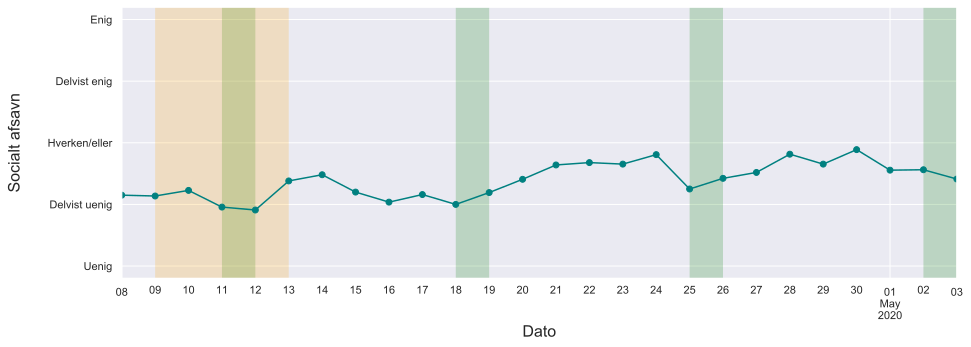
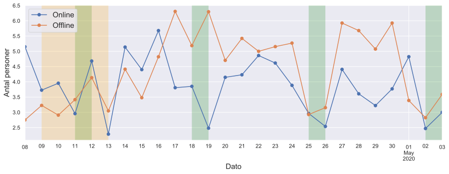
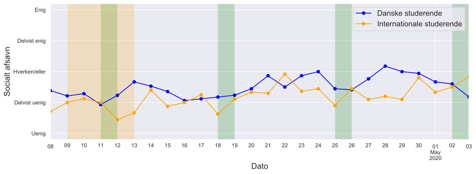
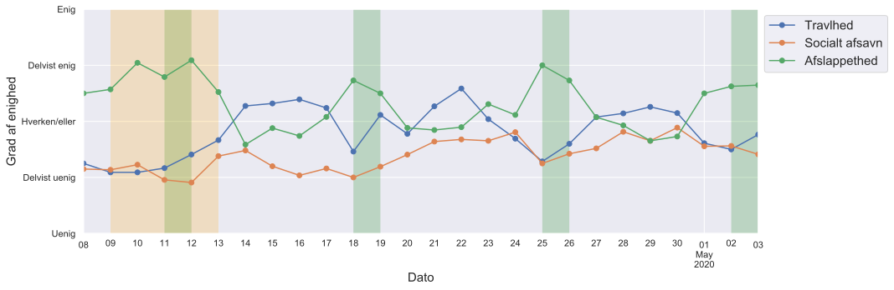
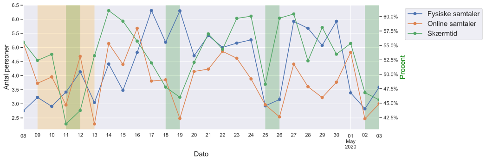
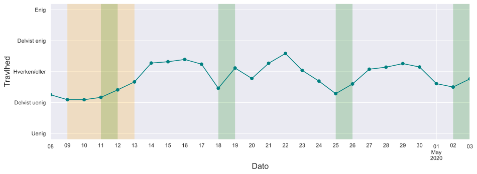
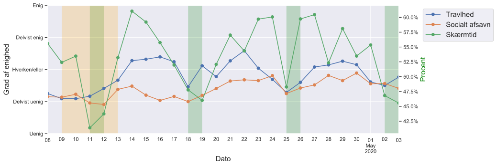
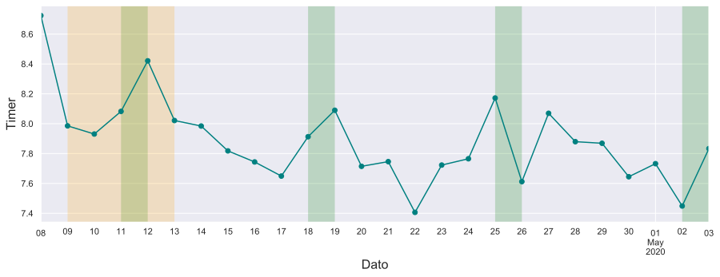
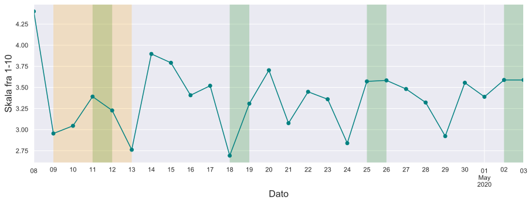
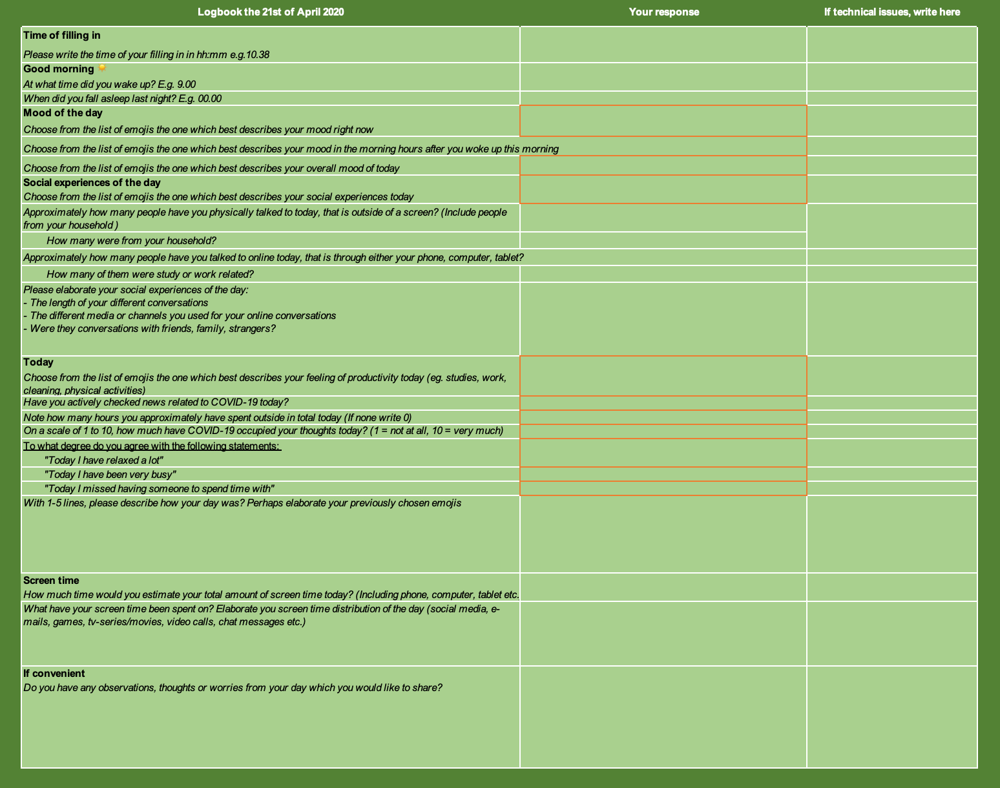

Life goes on – sådan da
Et kvali-kvantitativt studie af unges hverdag under nedlukningen
Udarbejdet af: Emilie Munch Gregersen, Malene Hornstrup Jespersen, Sofie Læbo Astrupgaard, Tobias Priesholm Gårdhus, Eva Iris Otto, Morten Axel Pedersen og Kristoffer Albris
Citat #1 ”Jeg er blevet bedre til at skrive med folk… at chatte. Jeg vil helst ses i virkeligheden med folk, men jeg kan se, at der er mange der bliver hårdt ramt af at være i lockdown... man skriver lige til dem der ikke er der. Vi skal huske at passe på os selv og hinanden. Så det synes jeg, at jeg er blevet ret god til at få gjort”
De unge lider i gennemsnit ikke af socialt afsavn Grafen viser hvorvidt de unge i vores undersøgelse er enige i udsagnet ”I dag har jeg savnet nogen at være sammen med”.
| Figur 1 - Hvor enig er du i udsagnet ”I dag har jeg savnet nogen at være sammen med” |
|---|
De to første opslag i denne blogserie fokuserede på, 1) hvilke emner der optog danske Twitter brugere i ugerne før, under og efter nedlukningen som følge af corona-pandemien, og 2) hvordan tonen i danske tweets ændrede sig i løbet af det samme tidsrum. Dette tredje opslag handler også om tiden omkring nedlukningen, men det adskiller sig ved at bygge på et ganske anderledes datagrundlag. Således består vores data af interviews og daglige logbogsposteringer fra en gruppe unge kollegiebeboere i Danmark, og ikke tusinder af Twitter-opslag. Dette mere kvalitative datasæt giver mulighed for at kigge nærmere på en bestemt gruppe borgeres oplevelser af hverdagen under nedlukningen. I dette opslag stiller vi derfor skarpt på, hvordan danske unge tilpassede deres hverdag efter Danmark blev lukket ned.
Overordnede resultater:
- De unge savner flere sociale oplevelser, men er ikke udtalt ensomme under nedlukningen.
- De nære relationer intensiveres, på bekostning af perifere venner.
- De unge lykkes med at opfinde kreative måder at være sociale online.
- Dagene opleves som ensformige, men de unges handlemønstre viser stadig forskel på hverdag og weekend.
- Kedsomhed og mangel på motivation for at studere præger de unge, men de modvirker dette ved at lave små justeringer i deres rutiner og på deres værelser.
- Unge med international baggrund undrer sig over den danske tilgang til smittehåndtering på kollegie og i det offentlige rum, og må samtidig forholde sig parallelt til udviklingerne i deres egne hjemlande.
Opsummerende viser vores undersøgelse, at der har været mange dage, hvor flere af de unge har savnet socialt samvær og særligt sociale oplevelser, der kunne bryde ensformigheden af hverdagen. Vores data peger dog ikke entydigt i retning af en voksende ensomhed blandt disse unge. Dette skyldes muligvis at ”tvangs-digitaliseringen” af studieaktiviteter og deres sociale liv foranledigede de unge til at være sammen med medstuderende, venner og familie på nye online-baserede måder. For mange har krav om social distancering betydet, at de ses med færre mennesker, men at de nære relationer til familie, tætte venner og medbeboere på kollegiet er blevet intensiveret. Dette har for flere været en positiv oplevelse. Samtidig kæmpede flere af de unge med at finde motivation for at studere og arbejde, netop fordi disse aktiviteter i vid udstrækning nu foregik online. De unge forsøgte dog på en lang række punkter at modvirke kedsomhed og følelse af ensformighed ved at lave om på deres værelse eller installere nye rutiner i deres hverdag. Risikoen for at blive smittet betød desuden, at de unge har måttet regulere hinandens adfærd i deres fælles arealer og køkkener, f.eks. for hvem der må komme på besøg. Specifikt for de internationale studerende, så har disse ikke følt sig mere ensomme end de danske studerende i løbet af vores fire uger lange undersøgelsesperiode; selv på trods af at de har interageret med færre mennesker dagligt. På den anden side var de internationale studerende mere bekymrede for den planlagte genåbning af samfundet, der blev annonceret i starten af april. Denne undersøgelse hviler på et unikt og flerstrenget datasæt af både kvalitativ og kvantitativ natur. Begyndende i april og fire uger frem bad vi 59 unge mennesker om at udfylde daglige logbøger (se uddybende forklaring af data og metoder i sektion 6). De blev bedt om at svare på en række fastlagte spørgsmål angående søvn, offline og online sociale interaktioner, humør, m.m. Desuden havde de unge mulighed for selv at tilføje yderligere bemærkninger og refleksioner i åbne tekstfelter. Som en del af undersøgelsen blev 24 af respondenterne desuden interviewet ved brug af antropologiske spørgeteknikker. Med udgangspunkt i disse data fokuserer dette studie på unge, som bor på samme københavnske kollegie, hvilket udgør et sample på 33 af de 59 personer, der deltog i undersøgelsen, og heraf medvirkede 13 i interviews. Ud af de 33 unge på kollegiet er 13 studerende med international baggrund (hvorfor logbøgerne også blev rundsendt i både en dansk og en engelsk version). Ud over betydelig homogenitet (alder, uddannelsesniveau) er denne sample karakteriseret ved en række særlige forhold, der udspringer af deres liv som kollegiebeboere. Ud over et værelse med eget toilet og bad (i alt ca. 18 m2) har de adgang til et fælles køkken, som de deler med 11-12 andre studerende. Denne boligform giver selvsagt anledning til en række særlige udfordringer i forbindelse med corona-pandemien generelt og diverse regulativer og anvisninger om social distance, selvisolering osv. i forbindelse med nedlukningen. Vores indsamlingsperiode strækker sig fra 8. april til 3. maj 2020. På dette tidspunkt havde de unge allerede haft omtrent fire uger til at vænne sig til den nye situation, herunder reflektere over, hvordan det føles ikke 'at skulle noget hele tiden', som en af de unge udtrykte det. Vores undersøgelse skal derfor ses i den bredere kontekst af et Danmark på højde af nedlukningen: Skoler, daginstitutioner, butikker, caféer og barer var stadig lukket, borgerne opfordredes stadig til at begrænse deres sociale interaktioner, der var udstedt opholdsforbud på flere offentlige steder, og myndighederne begyndte at teste flere og flere for corona-smitte. Dette opslag går dybt ned i vores data om disse unge for at undersøge, hvilken indvirkning nedlukningen har haft på deres hverdagsliv og oplevelse heraf. Mere specifikt vil vi i vores analyser fokusere på tre tematikker og problematikker: (1) Sociale Relationer og Netværk, (2) Vaner og Motivation samt (3) Bekymringer og Risikoopfattelser. Ved på denne måde at dykke ned i en periode i et udvalgt sample af unges liv i forbindelse med corona-pandemien ønsker vi at komplementere de tidligere opslag på denne blog, der havde til formål at afdække, hvordan folk snakkede om denne krise på Twitter.
1. Sociale relationer og netværk
Citat #2
”Jeg tænker tit over, hvornår hverdagen og livet bliver normalt igen :( Synes det virker som om, det har varet for evigt og kommer til at vare endnu længere”
Som bekendt blev alle borgere i landet under nedlukningen bedt om at holde sig hjemme så meget som muligt. Alt ikke-essentielt arbejde blev omlagt til hjemmearbejde. Uddannelser blev omlagt til online undervisning og vejledning, og studerende blev forment adgang til deres campus. Disse ændringer medførte en drastisk ændring af de unges interaktion med familie, venner og bekendte. Det har dog ikke nødvendigvis betydet, at de unge har levet i total isolation. I løbet af undersøgelsesperioden interagerede de både med andre mennesker ansigt til ansigt og via online platforme. I forbindelse med de rundsendte logbøger blev kollegiebeboerne bedt om dagligt at notere hvor mange mennesker, de havde interageret med off- og online, og heraf hvor mange af disse, der var medbeboere på kollegiet. Som det fremgår af Figur 2, er der gennemsnitligt observeret betydelige udsving fra dag til dag i antallet af mennesker, som de unge interagerer med både off- og online. Mere specifikt ser vi, at der er forskel på antallet af interaktioner mellem hverdag og weekend. Dette er især tydeligt for online interaktioner, hvor de unge i mindre grad møder andre mennesker, når det bliver weekend. På det individuelle plan (Figur 3) er der dog forskellige mønstre for hver af de unge. Nogle har stabilt meget få offline interaktioner, i perioder slet ingen, mens nogle få på kort tid rapporterer en eksplosiv stigning i antallet interaktioner. De fleste unge har haft meget få fysiske offline interaktioner med andre mennesker. Nogle få af dem trækker derfor gennemsnittet op, ved på nogle dage at have interageret med relativt mange andre mennesker.
| Figur 2 – Orange linje = Antal mennesker de unge i gennemsnit har haft offline interaktion med, ud fra besvarelse af spørgsmålet: ”Hvor mange har du cirka talt med fysisk dvs. uden for en skærm? Inkluder medlemmer af husstand”. Blå linje = Antal mennesker de unge i gennemsnit har haft online interaktion med ud fra besvarelse af spørgsmålet: ”Hvor mange har du cirka talt med online?”. Orange dage markerer påskeferien, og grønne dage markerer weekend. |
|---|
| Figur 3 – Antal mennesker hver af de unge har haft offline interaktion med (huller i grafer indikerer, at de unge ikke har udfyldt den pågældende dag i logbogen). Orange dage markerer påskeferien, og grønne dage markerer weekend. |
|---|
1.1 De unge savner socialt samvær, men ikke i overvældende grad
Citat #3
”I gennem hele dagen har jeg kunne mærke et savn/lyst efter at have fysisk kontakt med et andet menneske.”
Der er stor forskel på, om de unge savner socialt samvær. Der er både unge, der næsten ikke har kontakt til nogen, men som har det fint, og andre, hvor ’gode’ og ’dårlige dage’ udelukkende afhænger af, om de har været i kontakt med andre mennesker. Nogle unge savner sociale oplevelser, og ’at der sker noget’, mens savnet for andre mere handler om specifikke mennesker, de ikke har kunnet være sammen med. De fleste savner dog socialitet i en eller anden grad. Særligt fremhæves fysisk kontakt, venners gode lag og ’ubekymret samvær’ med andre som mangler. Et mindretal har perioder på flere dage, hvor de savner andre. Endelig er der også nogle, som ser pessimistisk på fremtiden og deres muligheder for at opbygge nye kontakter og venskaber. Dette peger også på, at det ikke kun er den kvantitative mængde af interaktioner, der betyder noget, men kvaliteten eller den specifikke form på interaktionen.
Citat #4
”Det bliver ikke muligt at få nye venner i år, som jeg ellers havde håbet. Føles lidt trist.”
Figur 4 viser, hvor meget de unge som helhed rapporterer en oplevelse af socialt afsavn. Gennemsnitligt ser vi, at de unges oplevelse af socialt afsavn er meget lav, selvom der ses en gradvis stigning i hverdagen, som herefter falder i weekenden. Som det dog ses i Figur 6 i næste sektion, er der store udsving på det individuelle niveau fra dag til dag. De unge savner i mindre grad interaktioner i weekenden, og på samme vis topper deres følelse af ensomhed mellem mandag og torsdag i næsten alle uger. Det er også værd at bemærke, at de unge ikke rapporterer mere socialt afsavn jo færre interaktioner de har. Tværtimod ser det ud til, at de føler sig mindre ensomme i weekenderne, hvor de til gengæld har færre off- og online interaktioner, med undtagelse af weekenden d. 18-19. april, hvor der var en høj grad af offline interaktioner. Vi kan se i Figur 3, at dette udsving særligt skyldes en enkelt ung, som rapporterer et markant højere antal offline interaktioner i denne specifikke weekend.
| Figur 4 – Gennemsnit for grad af enighed i udsagnet: ”I dag har jeg savnet nogen at være sammen med.”, de unge har svaret fra uenig til enig (gennemsnit). Orange dage markerer påskeferien, og grønne dage markerer weekend. |
|---|
1.2 Internationale studerende er ikke nødvendigvis mere ensomme
En nyligt publiceret undersøgelse foretaget af Institut for Antropologi og Sociologisk Institut på Københavns Universitet viser, at 65% af internationale studerende i Danmark har følt sig ensomme i løbet af corona-nedlukningen. Endnu mere markant er det, at undersøgelsen viser, at 75% af de internationale studerende rapporterer at have været ængstelige. I vores undersøgelse rapporterer de internationale studerende ikke om højere grader af ensomhed end de danske studerende. Det er påfaldende, at de internationale studerende faktisk rapporterer om marginalt lavere grader af savn efter socialt samvær end de danske studerende, som det ses i Figur 5 (gennemsnit) og Figur 6 (individuelt). Dette kan skyldes flere ting: Det er muligt, at de internationale studerende har sat deres forventninger lavere som led i at komme til et nyt land uden at have etablerede omgangskredse. Samtidig kan det skyldes, at de internationale studerende allerede er vant til at have mange interaktioner med familie og venner via online platforme. Det lave antal respondenter i vores undersøgelse gør også at det er svært at konkludere noget entydigt, i forhold til generelle niveauer af ensomhed blandt internationale studerende. Desuden bor de unge på det samme kollegie, og derfor kan der være lokale faktorer, der spiller ind. Vores undersøgelse peger dog på, at det er vigtigt at have et sammenlignende perspektiv med, når spørgsmålet er, hvorvidt specifikke grupper har været mere eller mindre ensomme under nedlukningen.
| Figur 5 – Gennemsnit for grad af enighed i udsagnet: ”I dag har jeg savnet nogen at være sammen med.” De unge har svaret fra uenig til enig. Grønne datoer er weekend. Blå linje = Gennemsnittet for herboende danske unge. Orange linje= Gennemsnittet for unge med international baggrund. |
|---|
| Figur 6 – Individuelle besvarelser af grad af enighed i udsagnet: ”I dag har jeg savnet nogen at være sammen med”. De unge har svaret fra uenig til enig. |
|---|
Citat #5
“Earlier in the month I felt really homesick and I don't have the freedom to fly home anymore, even though I was prepared to stay here. I just felt more homesick.”
Fælles for de internationale studerende er, at de er vant til at vedligeholde sociale relationer på afstand, og i den forbindelse kan man antage, at de har en relativt stor erfaring med at bruge digitale tjenester til kommunikation med venner og familie. De fleste af de internationale studerende har dagligt telefon- og videosamtaler med familiemedlemmer i deres hjemlande, og de fortæller, at det betyder meget for dem at have jævnlig kontakt til familie og venner i udlandet. De internationale studerende er dermed afskåret fra at være fysisk sammen med flere af deres nære bekendtskaber, og mange af dem har ikke etableret et socialt netværk i Danmark. Derfor er de allerede på ”udebane” i forhold til netværk og relationer. Flere internationale unge rapporterer desuden, at de savner deres familier endnu mere under nedlukningen.
Citat #6
“Earlier in the month I felt really homesick and I don't have the freedom to fly home anymore, even though I was prepared to stay here. I just felt more homesick.”
For langt størstedelen gælder det, at de kun fysisk omgår de unge, som de deler køkken med. Kollegiet er derfor det sted, hvor nærmest alt offline samvær foregår for de internationale studerende. Kvaliteten af samværet er dog meget forskellig i de enkelte køkkener: Nogle af de unge fortæller om meningsfulde og tætte venskaber med deres medbeboere, mens andre beskriver relationerne som mere overfladiske og indholdsløse. Foruden medbeboere har nogle af de internationale studerende netværk på deres studie, men da de ikke længere mødes fysisk på studiet, bliver dette ikke vedligeholdt for mange.
Citat #7
“I do find that I miss social interaction, although I am definitely an introvert.”
Samtidig opvejer deres digitale kommunikationspraksis med familie og venner for følelsen af ensomhed for nogle af de unge. Der er enkelte eksempler på nogle, der har 0 offline interaktioner stort set alle fire uger, men ikke er enige i udsagnet om, at de savner nogen at være sammen med. Her tyder det på, som tidligere beskrevet, at det digitale accepteres som en meningsfuld måde at være social, og at det er tilstrækkeligt for at opfylde sociale behov.
1.3 Afslapning og ensomhed er forbundne
Når vi kigger på forholdet mellem i hvor høj grad, de unge rapporterer, at de savner sociale interaktioner, og om de føler sig afslappede og/eller travle, fremtræder et interessant, om end ikke særligt overraskende, mønster.
| Figur 7 – Sammenligning af gennemsnit for grad af enighed i udsagnene: ”I dag har jeg slappet meget af”, ”I dag har jeg haft meget travlt” og ”I dag har jeg savnet nogen at være sammen med”. De unge har svaret fra uenig til enig. |
|---|
Som Figur 7 viser, så står forholdet mellem, at de unge har rapporteret, at de føler sig afslappede, og at de har travlt, i nærmest direkte modsætningsforhold til hinanden. Dette er ikke så påfaldende, idet oplevelserne af travlhed og afslappethed ud fra en common sense betragtning er modsætninger. Mere interessant er tendensen, at jo mere travle de unge er, jo mere savner de sociale interaktioner. Der er dog undtagelser, som f.eks. i dagene 15-16 april, hvor de unge rapporterer om mindre socialt afsavn på trods af, at de er mere travle. Den modsatte tendens gør sig gældende for forholdet mellem følelsen af at være afslappet og savn efter socialt samvær, om end denne tendens er mindre tydelig. Altså, jo mere afslappede de unge er, jo mindre savner de socialt samvær. For visse dage er der dog et omvendt mønster, hvor vi ser en positiv sammenhæng mellem at være mere afslappet og savne socialt samvær. En forklaring på denne tendens kunne være, at travlhed forstærker savnet efter en normal hverdag, hvor tilstedeværelsen af kollegaer og studiekammerater gør arbejdspresset nemmere at håndtere, men at dette kan variere fra dag til dag. Samtidig ser vi også, at forskellen mellem weekend og hverdage igen er tilstede: De unge er mere afslappede i weekenden og mere travle i hverdagene.
1.4 Nære relationer intensiveres
For flere af de unge har nedlukningen betydet en intensivering i tætte relationer; enten med venner, familie eller bofæller. Mange af de danske unge beretter om, at de er taget hjem til deres forældre i en del af perioden, og nogle af de internationale fortæller samtidig, at de snakker meget mere med deres familie, end de plejede. Blandt de tilbageværende på kollegiet har boligsituationen givet dem mulighed for at socialisere på nye måder med dem, de deler køkken med. For nogen har det betydet, at de er blevet tættere og har socialiseret som en husstand med fælles måltider og aftenaktiviteter, hvor det for andre ikke har haft den store betydning. Med andre ord, er strukturerne af deres sociale netværk blevet komprimeret ind til at bestå af færre relationer end normalt. Til gengæld betyder disse relationer mere. Risikoen for smitte indebærer, at der i alle tilfælde følger refleksioner med om, hvorvidt man kan være et bestemt antal mennesker samlet, og hvordan man bør handle i bestemte situationer (se i øvrigt sektion 3.1). Størstedelen af de unge beretter i logbøgerne og i interviews om, at der er bekendte, de ikke længere snakker med eller snakker meget mindre med. Således har nedlukningen for flere af de unge betydet at de må prioritere i deres relationer. For nogle har det betydet at prioritere familien, for andre medbeboere på deres kollegiekøkken, og for andre deres kærester eller meget tætte venner.
Citat #8
“Det har været en dejlig dag i dag. SKØNT at se veninderne, som jeg normalt ser flere gange om ugen, og som jeg ikke har set siden starten af marts pga. lockdown. Vi var dog ikke alle fra venindegruppen, idet vi så ikke kunne holde den fysiske afstand, så jeg savnede lidt de sidste 2. Også dejligt, fordi min bedste ven havde sendt et påskeæg til mig i posten, hvilket jeg blev rigtig glad for. Så overordnet set en dejlig dag.”
Der er dog nogle unge, der beretter om, at de er begyndt at snakke med venner og bekendte, som de ikke normalt interagerer med eller ikke har set i flere år, hvilket digitaliseringen af socialitet direkte eller indirekte er medvirkende til.
Citat #9
“I'm chatting with my high school friends which I normally wouldn't”
Enkelte reflekterer også over det solidariske aspekt i at opretholde kontakt med andre for at modvirke generel ensomhed og mistrivsel. Samlet oplever vi altså tendenser mod at intensivere de tætteste relationer og mod en generaliseret omsorg for andre under corona-pandemien.
1.5 Den relationelle skærm
De unge skal etablere en hverdag, hvor skærme i større grad end før medierer social interaktion. Vi ser, at mange har taget det digitale til sig for at fortsætte deres sociale oplevelser. Her viser de unge stor kreativitet i variationen af aktiviteter, der sættes i gang via online kanaler. Eksempler er brætspilsaftener og madklubber over Zoom, online-gaming i en vennegruppe, hvor de spiller og snakker sammen på tværs af platforme eller online drukspil. Vores data tyder på, at digitalt og online samvær accepteres af flere som et nyt medium for meningsfuld kontakt under de nuværende omstændigheder. Dette er måske ikke så overraskende, givet at det er den form for interaktion, der langt hen ad vejen er mulig. Det er samtidig interessant, hvor mange forskellige platforme og kanaler, de unge anvender i deres digitale interaktioner. Forskellige platforme opfylder forskellige behov. Samtidig refererer mange af disse online aktiviteter tilbage til aktiviteter før corona-nedlukningen.
Citat #10
“Jeg er blevet bedre til at skrive med folk… at chatte. Jeg vil helst ses i virkeligheden med folk, men jeg kan se, at der er mange der bliver hårdt ramt af at være i lockdown... man skriver lige til dem der ikke er der. Vi skal huske at passe på os selv og hinanden. Så det synes jeg, at jeg er blevet ret god til at få gjort”
Dog er der også afsavn forbundet med denne form for kontakt. Flere rapporterer, hvordan det digitale ikke kan opveje manglen på det offline samvær. For nogle af respondenterne mangler fornemmelsen af rummet og stemningen ved den digitale kontakt; det er sværere at læse folks mimik igennem skærmen, og denne oplevelse føles ikke som ”at være til stede med folk i virkeligheden”. Dette leder til frustrationer og savn efter det gamle.
Citat #11
“Jeg synes det kan være lidt svært/hårdt ikke at være til stede med folk I virkeligheden, det er bare sværere at aflæse folks mood og mimik, når man snakker sammen gennem en skærm.”
I Figur 8 ses de unges gennemsnitlige skærmtid over tid. Det er tydeligt at skærmtiden tager et dyk særligt i starten af weekenden. Man kunne antage, at den dalende tid på skærm er koblet til flere offline interaktioner, men her ser vi, at der er variation fra weekend til weekend for, hvor mange mennesker de unge ser ”in real life”. Ikke overraskende er antallet af online interaktioner tættere koblet til antallet af timer tilbragt foran en skærm.
| Figur 8 – Gennemsnit for andel af skærmtid i vågne timer (højre y-akse). Baseret på spørgsmålet: ”Hvor længe vil du cirka vurdere din samlede skærmtid i dag?” (Her menes inklusive telefon, computer m.m.). Sammenlignet med antallet af fysiske interaktioner (venstre y-akse) og online interaktioner (venstre y-akse). |
|---|
| Figur 9 – Individuelle angivelser af andele af skærmtid i vågne timer. Baseret på spørgsmålet: Hvor længe vil du cirka vurdere din samlede skærmtid i dag? |
|---|
Når sociale oplevelser også udspiller sig online, kommer skærmen til at spille en stor rolle for både arbejde og fritid. I logbøgerne beskriver de unge den høje skærmtid som negativ, og når vi i interviews spørger ind til deres specifikke oplevelser med skærmtid, beretter de unge at de oplever skærmtiden negativt og som f.eks. tidsfordriv, når de ”surfer” og bruger tid på ”sociale medier”. Der er dog flere, der nævner, at de samtidig har accepteret skærmen og en øget digitalisering som en præmis for deres nye hverdag. En stor andel af skærmtiden er ’tvungen’ i den forstand, at studie og arbejde nu kun medieres af en skærm. Hertil er den resterende del fritid til serier, spil eller nu i højere grad sociale aktiviteter. Når de unge beretter om sociale arrangementer online, som f.eks. brætspilsaftener eller samtaler med veninderne, bliver disse aktiviteter ikke set som skærmtidsforbrug på samme måde, som det de beskriver som ”sociale medier”. Dermed laver de unge en skelnen mellem online social kontakt afhængig af, hvad intentionen med kontakten til andre er. Kort sagt er der forskel på social kontakt på Instagram og online kaffemøder, og dette smitter af på, hvordan skærmtiden opleves. Forholdet til tid brugt på at være online er derfor afhængig af de specifikke typer handlinger, de unge er engageret i, og alle typer social kontakt er ikke lige, når de unge skal bedømme deres skærmbrug. Den anden vej rundt har den øgede brug af digitale rum også været med til at sætte spørgsmålstegn ved, hvad der bliver forstået ved venskab, studiekammerat osv. For nogle kan det opleves som udfordrende at være social gennem en skærm. Dette fører til nye typer spørgsmål om, hvad der konstituerer en relation og et venskab, da etablerede konventioner ikke længere kan bruges. Det kommer for eksempel til udtryk ved, at de unge sætter spørgsmålstegn ved allerede etablerede relationer, der nu skal vedligeholdes og plejes i en online kontekst.
Citat #12
“Godt at have zoom-møde med studiegruppen, men det er svært for mig at finde ud af det sociale gennem en skærm. Er vi venner eller ej hvis alle vores samtaler kun foregår via zoom og Facebook?”
Den nye måde at være sammen på, herunder indskrænkningen og intensiveringen af det sociale til nærmeste relationer, fører til, at flere savner andre typer relationer f.eks. løst bekendte og studiekammerater, som man kun snakker med til en kop kaffe i pausen eller at møde nye mennesker.
1.6 Vejret påvirker de unges sociale liv
Vejret påvirker os altid, uanset om samfundet er lukket ned eller ej. Alligevel er vi interesserede i, om de unges interaktioner og humør blev påvirket af om temperaturen var høj eller om der var dage med flere solskinstimer end andre. I Figur 10 ser vi antallet af de unges online og offline interaktioner i relation til middeltemperaturen og antallet af solskinstimer for de pågældende dage. Her ses det, at der i visse perioder er en sammenhæng mellem solskintimer og antallet af offline interaktioner (f.eks. fra d. 13-26. april), men i andre perioder vendes denne sammenhæng på hovedet (f.eks. fra d. 26. april til 03. maj). Ligeså er der nogle dage en sammenhæng mellem bedre vejr og færre online interaktioner foran en skærm, men der er også dage, hvor de online interaktioner stiger når vejret bliver bedre (f.eks. d. 20-22. april). Det kan dog med lidt god vilje siges, at de unge er mere sociale jo bedre vejret er, selvom der er undtagelser.

| Figur 10 – Gennemsnittet af online og fysiske interaktioner de unge har haft samt antallet af solskinstimer og middeltemperatur i perioden. Vejrdata hentet fra DMI (www.dmi.dk/vejrarkiv). |
|---|
I interviews med de unge, kobler de ikke overraskende vejret sammen med deres humør og aktiviteter. En stor andel rapporterer at deres gode humør skyldes vejret.
Citat #13
“Det har været en dejlig dag. Sociale oplevelser, jeg har været udenfor i solskin og jeg har formået at koncentrere mig om mit studie i flere timer og få læst.”
Solskinsvejr kan dog også distrahere beboerne fra deres studier og arbejde, ved at de mødes med venner og familie udenfor, hvilket det gode vejr tillader, men når der skal findes årsager til godt humør, er dette en af de mest nævnte faktorer. Samtidig kan dage med solskin og relativt høje temperaturer får de unge til at reflektere over om folk generelt er begyndt at glemme den ekstreme situation som alle har været igennem de sidste mange uger.
Citat #14
“I dag har det føles som en almindelig hverdag (altså som om der ikke er corona). Det skyldes bla. når jeg ud og går tur, så var der masser af mennesker der var ude og nyde det gode vejret, og der flere folk der var sammen med deres venner og I større gruppe. Det virket til at i dag har en del glemt den situationen vi er i (ligesom mig selv)”
2. Vaner og Motivation
Et centralt tema, som optager mange af de unge, er kampen for at få etableret en ny hverdag med faste rutiner. I relation til det rapporterer mange af de unge, at de mangler motivation for at udføre deres arbejde og studier, som for de flestes vedkommende er omlagt til at foregå online.
2.1 Etableringen af en ny hverdag
De unge beretter gennemgående i både logbøger og interviews om, at tid opleves anderledes end tidligere. Mange beskriver dagene som ensformige, og flere rapporterer, at de ikke umiddelbart kan skelne dagene fra hinanden eller huske, hvordan de tilbragte weekenden. Samtidig går den oplevede ensformighed ofte hånd i hånd med kedsomhed.
Citat #15
“Jeg har haft en okay, men lidt kedelig dag. Jeg savner mennesker at snakke med og at have kontakt til venner. Jeg savner hverdagsrutiner med studie og andre pligter og jeg savner, at der spontant og uventet sker ting. Jeg har cyklet til Bilka, bare for at have noget at lave.”
I en efterfølgende evaluering af logbogsprocessen berettede et par unge om, hvordan udfyldningen af logbogen til tider havde føltes som ’copy/paste’; at dagene var ens, så det havde været frustrerende og på grænsen til irriterende at udfylde den samme dag igen og igen. Muligheder for at deltage i spontane eller stimulerende aktiviteter føltes pludselig begrænsede. Flere påpeger, at deres offline interaktioner ofte foregår med de samme mennesker hver dag; eksempelvis andre unge fra deres kollegiekøkken, deres kærester eller få udvalgte venner. I flere af logbøgerne beskrives en følelse af rastløshed på trods af dage, der ofte indeholder forskellige og varierende gøremål. Blandt de unge ser vi dog forsøg på at etablere nye dagsrytmer formet af nedlukningen. Nogle indretter hverdagen således, at formiddagene i højere grad bruges til online interaktioner og eftermiddagen til offline møder, hvilket oftest ikke er arbejds- eller studierelateret. Eftermiddagen er ofte det tidspunkt, hvor folk fysisk tager en pause fra værelset. Her får mange gået en tur med en ven eller deltager i aktiviteter med andre unge fra deres kollegiekøkken. Herudover ser vi i Figur 11, at de unge rapporterer, at de er mindre travle i weekenderne, om end den første weekend var en undtagelse på grund af påskeferien. Dette indikerer også, at den ugentlige cyklus med mere arbejde i hverdagene og mindre i weekenderne bibeholdes.
| Figur 11 – Gennemsnit for grad af enighed i udsagnet: ”I dag har jeg haft meget travlt”. De unge har svaret fra uenig til enig. |
|---|
2.2 Udfordret på motivation
Corona-nedlukningen har for de fleste unge medført, at de har kæmpet med motivationen for at arbejde og studere. Flere skriver, at de er overraskede over deres mangel på motivation. For mange er det et tema, de vender tilbage til flere dage i træk. Dette er et eksempel på, hvordan de unge i nogle tilfælde brugte logbøgerne som en næsten terapeutisk dagbog, hvilket de bekræftede i interviews og efterfølgende evalueringer.
Citat #16
“Jeg er utrolig umotiveret omkring ALT. Det er helt vildt!”
De unge kobler selv manglen på motivation sammen med stress og bekymringer om, hvordan de skal klare studiearbejdet. De reflekterer over, hvad den manglende motivation skyldes, men for alle kan det føres tilbage til corona-nedlukningen og de ændrede rammer for hverdagen. Rutiner og strukturer, der i mere normale tilstande holder den enkelte til ansvar over for sit studie, føles fjernere eller er helt forsvundne.
Citat #17
“Mine dage er blevet enormt ensformige. Jeg er på et punkt, hvor jeg ikke engang ved om jeg savner selskab eller ej. Keder mig enormt, men er ude af stand til at udrette noget - det føles som en rigtig ond spiral, jeg er for doven/uvillig/bange til at bryde ud af.”
Andre rapporterer, at fordi de normale tidslige rammer for hverdagen oplevelse som værende kollapset, er det sværere at opretholde rutiner og vaner. Selvom de føler, at de kommer bagud i studiet og arbejde, beskriver de, at de finder det svært at stå op. Flere nævner, at de savner at have noget at stå op til; underforstået, at arbejde eller studier hjemmefra ikke er nok til at komme godt i gang med dagen.
Citat #18
“”[…] når det kommer til stykket og jeg skal til at lave noget fagligt magter jeg det bare ikke.”
Følelsen af at være alene og koblet fra det fysiske fællesskab omkring studierne, beskrives som nedsættende for motivationen, og viser samtidig vigtigheden for mange i at være indlejret i studie- og arbejdsrutiner placeret i forskellige fysiske fælleskaber. Oveni bidrager følelsen af kriseberedskab, som alle er i, til, at negative følelser som frustration, tristhed og savn bobler op til overfladen. Dette forstærker også manglen på motivation. Motivationen for at forsætte den normale arbejdsindsats er derfor udfordret af to fronter pga. nedlukningen: På den ene side via den generelle bekymring, der omgærder hele nedlukningen og risikoen for corona, og på den anden side følelsen af apati og mangel på energi, der kommer af at skulle indstille sig på en hverdag, hvor der sker meget lidt.
2.3 Forsøg på at modvirke kedsomhed og apati
Nogle unge formår at vende den manglende motivation igennem små ændringer i hverdagen, der kan ses som bevidste strategier. Eksempelvis finder de andre steder end hjemmet at studere, tvinger dem selv til at stå tidligt op eller finder læsekammerater i nærheden. Andre skifter placering i rummet i løbet af dagen for at genetablere fokus og modvirke kedsomhed. Mange begynder at søge et fysisk afbræk ved at meditere, løbe, lave hjemmetræning eller gå ture, hvilket, de fortæller, giver dem en følelse af pusterum fra rastløsheden og rutinerne på værelset. Andre påbegynder projekter, såsom at ommøblere deres værelser, eller fordybe sig i hverdagsaktiviteter som madlavning. Simple aktiviteter som eksempelvis bagning, lægge puslespil eller oprydning på værelset bliver brugt aktivt til at omstrukturere tiden i aktiviteter, som i nogle tilfælde kan give de unge en følelse af kontrol med deres, liv.
Citat #19
“Today I spent a good amount of hours in the kitchen, baking and keeping company for my boyfriend who was cooking. I felt empowered as I felt like I had a purpose to bake that cake, purpose which I kind of missed during these days spent inside.”
Sagt på en anden måde er de unges udøvelse af agens, altså muligheden for aktivt og bevidst at påvirke ens eget liv, begrænset under nedlukningen, men samtidig prøver de at bibeholde denne agens via en opjustering af simple og mondæne aktiviteter, samt ved at omforme deres værelser og opholdsrum. At justere på de temporale og rumlige forhold er altså en vej ud af følelsen af apati og kedsomhed.
2.4 Betydningen af ’normalt’ arbejde
Online undervisning og arbejde er en faktor, der i højere grad binder nogle til skrivebordet end andre, og for dem, der arbejder og studerer hjemmefra, giver dette anledning til mere skærmtid og flere frustrationer end for dem, der stadig møder på arbejde andre steder end foran skærmen. Cykelture til og fra arbejdet, samt offline samtaler med kollegaer i frokostpausen, kan således betyde, at ændringerne under nedlukningen ikke føles så store. De unge, der har haft mulighed for at arbejde fysisk på deres arbejdsplads under nedlukningen, har derfor ikke i samme omfang rapporteret problemer med motivation. Samtidig reflekterer disse unge over netop dette, og viser dermed også, at de forventede, at corona-nedlukningen ville betyde en forandring i hverdagen.
Citat #20
“Jeg har indtryk af, at min hverdag er meget lidt påvirket af corona. Jeg har måske ikke lige så travlt, som jeg plejer at have, men det er tæt på. Jeg tager mine forbeholdsregler ift. corona, men tænker ikke rigtigt så meget over det, og ofte glemmer jeg det lidt, fordi jeg har travlt med arbejde og studie.”
Nogle kollegianere, der arbejder meget under corona-nedlukningen, får en følelse af, at de bliver ”workaholics”, og arbejdet kommer til at fylde alt for meget. Manglen på andre stimulerende begivenheder i deres liv under nedlukningen fører til en oplevelse af, at livet er hårdt og deprimerende.
Citat #21
“Jeg er virkelig træt af coronalivet. Jeg ville ønske, at alting snart blev normalt, så man kunne få noget adspredelse ud over studie og arbejde. Jeg føler, at jeg nærmest lever for mit arbejde. Det er super hårdt.”
Er der herudover en sammenhæng mellem hvor meget de unge savner socialt samvær, hvor travlt de har, samt hvor meget skærmforbrug de har? I Figur 12 er de tre variable illustreret. Her fremgår det, at de unge har en tendens til at rapportere en smule mere socialt afsavn, når de også bruger meget tid på skærm, samt når de har travlt, hvilket også blev illustreret på Figur 7. Det tyder altså på, at jo mere tid de unge bruger på deres skærm, jo mere savner de socialt samvær med andre mennesker, om end denne tendens ikke er lige tydelig i alle uger.
| Figur 12 – Sammenligning af gennemsnitlig andel skærmtid ud af vågne timer (højre y-akse) og gennemsnitlig grad af enighed i udsagnene: ”I dag har jeg haft meget travlt” (venstre y-akse), og ”I dag har jeg savnet nogen at være sammen med” (venstre y-akse). De unge har svaret fra uenig til enig. |
|---|
2.5 Søvnmønstre er stabile, om end med store udsving for enkelte
For at få et indblik i de unges dagligdag, bad vi dem rapportere, hvornår de gik i seng, og hvornår de stod op. Herudfra kan vi estimere den generelle udvikling i deres søvnmønstre under nedlukningen.
| Figur 13 – Antal timers nattesøvn for de unge plottet gennemsnitligt med trend og individuelle udsving per dag. Udregnet ud fra spørgsmålene: ”Hvornår vågnede du i morges?” F.eks.9.00, og ”Hvornår faldt du i søvn i går?” F.eks. 23.00. |
|---|
| Figur 1 – Antal timers nattesøvn for de unge. Individuelle besvarelser af spørgsmålene: ”Hvornår vågnede du i morges?” og ”Hvornår faldt du i søvn i går?” |
|---|
I Figur 14 vises de unges individuelt rapporterede søvnmønstre, og i Figur 13 vises den gennemsnitlige søvnmængde. Som det kan ses i Figur 13, er der ikke de store udsving i søvn på det gennemsnitlige plan. Hvis vi derimod kigger på de individuelle data, kan vi se, at der for enkeltes vedkommende er store udsving i, hvor meget de sover fra dag til dag. Dette kan godt være en fortsættelse af normale søvnmønstre fra før nedlukningen. Enkelte unge rapporterer også et stærkt øget søvnbehov. De ændrede søvnbehov indikerer også for nogle af de unges vedkommende, at de oplever, at de nye rammer har skabt en oplevelse af, at der ikke er nogen, der forventer, at man står ud ad sengen og møder op på et bestemt tidspunkt. For nogle kan det derfor være svært at holde en almindelig døgnrytme. Samtidig betyder den manglende transporttid, som i en normal hverdag er nødvendig, at flere står senere op, end de plejer.
3. Bekymringer og risikoopfattelser
Citat #22
“Dag 1: “Stressful and upsetting day - was tested for corona.” Dag 2: “Exhausted, slept for 4 hours in the middle of the day, corona test came back negative.””
Såvel i logbøgerne som i interviews med de unge spurgte vi ind til, hvordan de forholder sig til risici og deres bekymringer angående corona-smitte for dem selv og i samfundet generelt. Vi bad dem også om på daglig basis at rapportere, om de havde opsøgt nyheder omkring corona, og hvor meget corona havde fyldt i deres tanker den pågældende dag. I Figur 15 ses den gennemsnitlige udvikling i, hvor meget de unge gennemsnitligt udtrykker bekymring for corona-smitte, og i Figur 16 ses dette på individuelt niveau.
| Figur 15 - Gennemsnit for de unge baseret på besvarelser af spørgsmålet: ”På en skala fra 1-10, hvor meget har COVID-19 fyldt i dine tanker i dag? (1 = slet ikke, 10 = i høj grad)” |
|---|
| Figur 16 – Individuelle besvarelser af spørgsmålet: ”På en skala fra 1-10, hvor meget har COVID-19 fyldt i dine tanker i dag? (1 = slet ikke, 10 = i høj grad)” |
|---|
De unges bekymringer omkring corona og relaterede problemer kan grupperes i tre overordnede kategorier: 1) bekymringer om smittefaren, herunder hvordan man skal forholde sig til andre mennesker i det daglige, samt andre menneskers risikable adfærd, 2) bekymringer for andre mennesker, herunder især for familiemedlemmer, hvilket også kobles til de negative økonomiske effekter af nedlukningen, og endelig 3) bekymringer om potentielle risici forbindelse med genåbningen, specifikt genåbningen af dagsinstitutioner og de mindste skoleklasser i midten af april. Især de internationale studerende udtrykker bekymring om det sidste punkt.
3.1 Bekymringer om smittefaren
Citat #23
“Someone in my kitchen has corona symptoms and that feels very unsettling.”
De unge beretter i flere eksempler om, hvordan der sker sammenstød mellem deres divergerende risikoopfattelser. Den sociale frihed bliver i høj grad begrænset af, hvilke regler kollegiekøkkenerne i fællesskab opstiller for sig selv, hvilket således fungerer som endnu en måde hvorpå, de kan føle sig begrænset i deres muligheder for at socialisere. Den lokale implementering af retningslinjerne fra Sundhedsstyrelsen har medført forskellige grader af påpasselighed og interne diskussioner omkring hvem der må socialisere med hvor mange imellem de unge.
Citat #24
“Kl 22 havde vi køkkenmøde, hvor vi snakkede om hvorvidt vi måtte få venner over i fælleskøkkenet. Det blev stemt imod, at en fra køkkenet kunne have 2 venner over - synes jeg var lidt strengt.”
Vi kan se en udvikling undervejs i de fire uger under nedlukningen, hvor vi har fulgt de unge: Nogle af dem begynder at spørge sig selv, om det ikke var muligt at begynde at slække en smule på afstand til familie og venner, ikke mindst når de ser, hvordan andre mennesker opfører sig i det offentlige rum.
Citat #25
“I dag er jeg rimelig irriteret over at jeg ikke har set nogle af min familie og venner I snart 3 uger da jeg tænkt det var nok den bedste beslutning. Men alligevel når jeg går på gaden så ser jeg folk der går med deres venner osv. og på sociale media kan jeg se flere mødes stadig med deres venner. Det er lidt unfair, men det har også gjort at jeg har overvejet om jeg skal også går en tur med en veninde som jeg savner rigtig meget.”
Det offentlige rum giver samtidig de unge bekymringer og foranlediger overvejelser om, hvad der rigtigt og forkert adfærd, hvilket er tæt forbundet med følelser udløst af forskellige situationer. Bevægelse ud i det offentlige rum er behæftet med risiko for at blive irettesat af andre mennesker, hvis man i deres øjne ikke følger Sundhedsstyrelsens eller en butiks retningslinjer for at mindske smittefaren. I nogle tilfælde rapporterer de unge også om, at de har dårlig samvittighed over at være udenfor når gaderne er helt tomme, fordi de helst ikke vil bryde reglerne. Andre gange udtrykkes der også en grad af irritation over den ændrede adfærd i det offentlige rum, hvilket indikerer, at der er en vis variation i måden, de unge reagerer på bekymringen (eller mangel på samme) for smittefaren.
Citat #26
“i went to kvikly and a woman was mad at me for not understanding the rules of distance marked in danish on the floor. felt pretty bad about the kvikly incident, although the woman was excesivly rude, she was still right.”
Citat #27
“the streets are very empty. i felt embarrassed for being out. it felt like breaking rules.”
Citat #28
“Min veninde og jeg stod i kø til en kiosk ude på gaden. Jeg kan mærke at jeg næsten bliver irriteret, når folk virkelig prøver at overholde kravet om fysisk afstand, fx ved at gå en stor bue udenom køen på gaden. Måske er det fordi jeg synes, at når først man ændrer sin adfærd, har viruskrisen for alvor vundet. Så føles detsomomfolkgiveropforlet.”
3.2 Bekymringer for andre mennesker
Det er ikke kun dem selv, de unge er bekymret for. Deres forældre og venner er også genstand for refleksioner i forhold til smittefare og nedlukningens konsekvenser. Dette er særligt slående for de internationale studerende (se også sektion 3.4), måske fordi deres pårørende er langt væk.
Citat #29
“Worried about how long this corona situation will go on. Worried about my friend's Mum in a NYC hospital.”
Flere unge beretter også om situationer, hvor de blev i tvivl eller forundret over, hvordan andre mennesker forholder sig til risikoen for smitte. Således er andre menneskers handlinger ofte grobund for, at de selv bliver i tvivl om, hvordan de skal forholde sig til interaktioner med venner, familie og bofæller.
Citat #30
“Vi gjorde selvfølgelig vores bedste for at holde afstand, og vi krammede ikke (meget til min mors ærgelse). Men lagde mærke til at da min ene bror (som er den der generelt går mest op i corona da han stadig arbejder, og ham der hele aften igennem nægtede at give highfives m.m.) blev fuld, og det var ham der lavede drinks til resten, tog han isterneinger ned i glassene med sine bare hænder..... Så føler lidt at hans forbehold er lidt overfladiske if you follow. Men ellers var det også tydeligt at begge mine forældre ikke rigtig tager det særlig seriøst (selvom min papfar har astma og fylder 60 i år), for måtte tvinge dem til at vaske hænder inden maden, efter at de brokkede sig lidt over at det var unødvendigt.”
Det er samtidig værd at bemærke, at nogle unge udtrykker ligeså stor, hvis ikke større, bekymring for de økonomiske konsekvenser af nedlukningen, ikke kun i Danmark, men også internationalt. Dette blev tydeligt igennem en af de unges kritik af logbogens spørgsmål om tanker forbundet med corona. De unge blev bedt om at notere i logbogen, hvor meget de har tænkt på corona i løbet af dagen, og vedkommende pointerede, at tankerne ikke omhandlede det sygdomsrelaterede aspek (se citat #31).
Citat #31
“I am having trouble with the question "On a scale of 1 to 10, how much have COVID-19 occupied your thoughts today? (1 = not at all, 10 = very much)" I mean, I am not pointlesly worrying about "what if my family/I get sick", as I know it makes no sense, we should just do best we can not to and that is. Having said that I worry about the economic situation a lot. The economic situation of my family has not been good for past years and now it will be even harder. That is what worries me all the time, it is sort of covid-related, but I am not sure if that's what you mean. Having this in mind, I will not include such losely corona-related worries into my answer for this question. I will interpret the question as disease-specific.”
3.3 Bekymringer om genåbning og nye smitteudbrud
Citat #32
“Not sure if letting kids go to school is a good idea.”
Da Mette Frederiksen d. 6. april. 2020 annoncerer, at samfundet langsomt skal begynde at genåbne ved at lade institutioner åbne og de mindste elever komme tilbage i skole, var mange i Danmark bekymret for, om det ville forårsage en stigning i antallet af nye smittetilfælde. Dette er også tilfældet for flere af de unge. Da de unge i kraft af at være studerende på et kollegie ikke har børn, er spørgsmål omkring børnepasning og smittefare ikke noget, de direkte kan relatere til. Det er dog stadig noget, flere af dem reflekterer over.
Citat #33
“Min veninde har et barn, og hun sagde til mig I dag at hun vil ikke sendes hendes barn I børnehave, selvom regeringen åbner op for børnehaven. Hun synes det er dumt at tage den risiko. Det forstod jeg ikke helt hvorfor, men samtidig føler jeg ikke har ret til at sige noget da jeg ikke selv har et barn.”
Derimod er flere bekymret for, at det stigende antal mennesker, der opholder sig udendørs, vil føre til flere smittede. Ligesom de også udtrykker bekymring for, om det vil medføre smitterisiko, at flere af de unge, der har været hos deres familier, vender tilbage til kollegiet.
Citat #34
“More people are coming back to the household that means more chances of interactions and tramistion of viruses.”
Samtidig udtrykker enkelte også, at den annoncerede genåbning og den gradvise stigning i antallet af mennesker i det offentlige rum får dem selv til at slække på deres forholdsregler og bekymringer. Samlet ser vi altså, at de unge føler en mere generaliseret bekymring ved skolernes og børnehavernes genåbning, hvorimod deres bekymringer bliver mere specifikke, når det handler om konkrete situationer, de står i. Derudover skaber nye situationer også grobund for et skift i, hvad der anses som tilladelig adfærd.
Citat #35
“Motivation for at følge retningslinjerne har ændret sig. Jeg så kun dem jeg bor med i starten, ikke engang min mor. Men da det åbnede børnehaver og vuggestuer, så tænkte jeg at man godt kunne begynde at se nogle af mine familiemedlemmer og mine veninder. Jeg har slækket mere på det end før.”
3.4 Internationale studerende ser anderledes på corona-smitterisiko
De internationale unges syn på smittefare og bekymringer herom viser nogle nuancer, som ikke findes helt på samme måde blandt de danske unge. Derfor har vi valgt at fokusere på dem særskilt.
Citat #36
“It’s both overwhelming and interesting to understand how it looks in Denmark and in different parts of the world.”
De internationale studerende på kollegiet opsøger ikke kun de danske myndigheder for at finde information om risiko og retningslinjer. De orienterer sig i højere grad udad og indtager på den måde et mere globalt perspektiv på corona-virus. Når vi i interviews spurgte dem ind til retningslinjer for adfærd under coronakrisen, så sammenligner de internationale studerende de danske retningslinjer med retningslinjerne i deres hjemland og andre steder i verden. De forsøger at overskue og danne overblik over forskellige og ofte modstridende udmeldinger, og nogle forholder sig kritisk, mens andre er mere positivt stemte overfor den danske håndtering af corona-virus.
Citat #37
“I was a little bit anxious because before the lockdown I didn't feel that there were much measures taken in Denmark, so I wanted to go out of Denmark. but then after the lockdown I felt it was better to stay.”
Det kan skabe udfordringer for de internationale studerende at skulle balancere mellem udmeldinger i forskellige lande. De bliver forvirrede over, hvordan de bør opføre sig, når deres nære venner og familie i hjemlandet følger helt andre retningslinjer end dem, der gælder i Danmark. De internationale studerende fortæller desuden, at det kan være svært at tale med familie og venner i hjemlandet om corona-virus, fordi de ofte har forskellige opfattelser af, hvordan man bør forholde sig.
Citat #38
“[...] Because seeing how it goes in US and even in France. - Yeah. I just think it's really impressive also how the whole country managed to flatten the curve in so little time compared to the other countries.”
Citat #39
“I think it is interesting to see the contrast in policies and just try maybe to more keep to myself and follow policies that I think is more appropriate.”
Corona bringer også bekymringer omkring fremtiden, og hvorvidt der kommer en anden bølge af smitte. Også her er der en mere udtalt bekymring fra flere af de internationale studerende.
Citat #40
“I am worried that they [sic] will come a second wave of COVID and we will have to social distance for another couple of months and 2020 holiday season will be officially the worst summer in the history of the world.”
4. Konklusion
Konkluderende og opsummerende har vi fundet frem til følgende resultater, i forhold til de tre overordnede nævnte tematikker:
4.1 Social distancering tvinger de unge til at omlægge deres sociale liv, hvilket de er gode til
På et gennemsnitligt plan er de unge ikke ensomme, men for mange er der dage, hvor de savner sociale interaktioner. Muligheden for at få nye venner er samtidig stærkt begrænset, og de fleste interagerer kun med de samme få mennesker offline. De nære relationer bliver vigtige, og de unges evne til at genopfinde relationer på digitale platforme bliver afgørende for deres dagligdag. De internationale studerende er ikke nødvendigvis mere ensomme end de danske studerende, på trods af at de ses fysisk med færre mennesker på daglig basis. Koncentreringen og komprimeringen af de unges sociale liv som vi ser i data, kan siges at være et udtryk for at kvaliteten af relationer og netværk snarere end kvantiteten prioriteres. Men hvad der måske blev sat i gang som en nødvendighed grundet krav om distance, bliver for mange også en mulighed for at dyrke familierelationer eller relationer til gamle venner som ikke kan plejes under normale perioder.
4.2 Dagene flyder sammen, rytmer består, og motivation er svært af fastholde
Mens de unge i interviews og åbne svarmuligheder i logbøgerne rapporterer at de oplever at dagene flyder sammen, viser andre data fra logbøgerne at de stadig praktiserer en ugentlig rytme hvor der er forskel på hverdage og weekender: De er f.eks. mere travle i løbet af ugen, og de slapper mere af i weekenden. Det er imidlertid svært for mange at finde motivation til at lægge den sædvanlige indsats og energi i disse aktiviteter. Samtidig er de unge dog gode til at omstille deres liv til en nye tilværelse, som i endnu højere grad sker online. Mange er også gode til at indrette deres værelser på nye måder og til at etablere alternative daglige rytmer for at modvirke apati og kedsomhed. De unges udøvelse af agens er tydelig i deres forsøg på at modvirke disse negative effekter, og viser at nedlukningen har givet dem en mulighed for at være kreative i forhold til at omforme og gentænke basale forhold i deres liv, såsom måltider, indretningen af deres værelse, og simple daglige gøremål.
4.3 Risiko for smitte bekymrer især de internationale unge, og præger det sociale liv på kollegiet
De unge er generelt bekymrede for at blive smittet, men de slækker gradvist på den social distancering, i løbet af nedlukningen. Hvor de internationale studerende er mere bekymrede end de danske for nye smittetilfælde i forbindelse med genåbningen, så betyder retningslinjerne fra myndighederne, at livet som unge kollegiebeboer i højere grad end tidligere er underlagt betydelige regler, hvilket mange af de unge finder udfordrende i forbindelse med genåbningen af Danmark. Smitterisikoen har på sin vis både været en hæmsko for socialiteten på kollegiet og i de unges liv generelt, men også en mulighed for at gentænke kollegielivet, hvor fælles regler og grader af social kontrol uundgåeligt vil være tilstede i sådanne former for kollektivt liv.
4.4 Normaliseringen af undtagelsen
På et mere teoretisk niveau, viser vores undersøgelse at de unge mennesker viser en art af resilient tilpasning (Aldrich 2012) til svære omstændigheder som nedlukningen har budt dem gennem styrkelse af social kapital via de nære relationer, og modvirkning af kedsomhed og apati via kreativitet. Som katastrofeforskere har påpeget i årtier, så er menneskets natur i undtagelsestilstanden ikke karakteriseret ved panik og kaos, men snarere af solidaritet og samarbejde, på trods af alle udfordringer (Fritz 1996; Solnit 2009). Dette er også tydeligt fra resultaterne af denne undersøgelse. Nedlukningen har således givet os en model for, hvordan verden kan bebos under ekstraordinære omstændigheder på en positiv måde. Som vi har understreget, så betyder dette dog ikke at det er omkostningsfrit for de unge at skulle omstille deres liv til at se færre mennesker, at omlægge deres arbejde og studier på online platforme, samt ikke at kunne bevæge sig rundt i byen som normalt. Dette gælder særligt for de af de unge der i forvejen har det svært, samt for de internationale studerende der allerede er på ”udebane” i Danmark. Kriser og katastrofer har en tendens til at ramme de mest sårbare og mest udfordrede hårdest (Barrios 2017), og derfor skal dette studie ikke ses som en opfordring til at vi bruger krisen som basis for f.eks. at mindske fysiske interaktioner blot fordi det lykkedes under nedlukningen. Samtidig viser undersøgelsen os også at der er variation i hvordan vi forholder os til risici på, ikke bare mellem kulturer, men også på det individuelle plan (Douglas og Wildavsky 1983). Som politologen Sheila Jasanoff (2010) har bemærket, så er vores opfattelse af risici essentielt set hukommelse vi skubber foran os. Og denne fremskudte hukommelse kan ændres i takt med nye begivenheder og kriser. Vi har med andre ord mulighed for at bruge denne krise på at reflektere over, hvordan vi hver især ser på risici fra epidemier og vira generelt. Danskerne kan godt håndtere kriser af dette omfang, og vi vil klare os endnu bedre i fremtiden, hvis vi lærer af denne krise. Det bør vi gøre, for vi kan komme til at stå over for langt farligere trusler, f.eks. en epidemi med langt højere dødelighed, såsom ebolavirussen. Derfor skal vi drage os vores erfaringer om, hvordan livet i en krise alligevel kan fortsætte, uden at vi mødes af et totalt økonomisk og socialt kollaps.
5. Videre perspektiver
Formålet for dette opslag har været at undersøge, hvordan de unge handler og tænker om ændringen i deres hverdag under nedlukningen. Vi har særligt fokuseret på forandringer i de unges relationer og sociale netværker, på deres forsøg på at opretholde motivation i forhold til studier og arbejde, samt på hvordan de unge forholder sig til diverse retningslinjer og normer om social afstand og deres bekymringer i forhold hertil. I det videre arbejde med vores data ville det være oplagt at kigge nærmere de følgende tre perspektiver, der lægger sig i forlængelse af vores analyser men involveret aspekter af datasættet, vi endnu ikke har kigget på. Perspektiv 1: Forholdet mellem skærmtid, socialt samvær, afslapning og travlhed kunne være et interessant emne for en fremtidig analyse, der ikke blot tilgår logbøgernes kvantitative data visuelt i form af plots (som vi her har gjort), men ved brug af statistise metoder. Det kunne være oplagt at gå dybden med spørgsmål om, hvorvidt det, at være mere social (dvs. at have flere interaktioner med andre mennesker) skaber mere afslapning eller mere travlhed, samt hvorvidt der er en nævneværdig forskel i udbyttet af online til offline socialisering. I den nuværende diskussion omkring sociale medier og digitale platformes påvirkning af især unge menneskers velvære antages og postuleres det ofte, at online interaktioner ikke opfylder de samme sociale og psykologiske behov som offline interaktioner (Lukianoff og Haidt 2018; Rashid 2017). Vore data giver kun indikationer, men peger ikke på en afgørende forskel mellem offline og online interaktioners påvirkning af f.eks. følelsen af afslapning. Perspektiv 2: Via emojis blev de unge bedt om at de beskrive deres daglige humør udenfor fem kategorier: Humøret i skrivende stund, morgenens humør, dagens overordnede humør, humør forbundet med følelser og den daglige socialitet og produktivitet. Hvor denne analyse ikke har gjort brug af disse data vil det i et kommende studie være oplagt at undersøge, hvordan de unges valg emojis hænger sammen med andre kvalitative og kvantitative besvarelser på spørgsmål omkring eksempelvis data omhandlende travlhed, afslappethed, ensomhed, oplevelser af corona-smitte, osv. Det kunne være særligt spændende at undersøge, hvad der forårsager udsving i humør ved at sammenligne sjældent brugte emojis med deres tilhørende kvalitative komponent. Eksempelvis tyder det på, at unge i faste parforhold, især samlevende, har færre daglige offline interaktioner og generelt et andet socialiseringsmønster end de andre. Data fra emojis er herudover ud fra et metodisk perspektiv anderledes end de andre svar fra de unge, da de udvalgte emojis ikke udgør én skala fra f.eks. mere glad til mindre glad, men også inkluderer ambivalente og ”skøre” emojis. Inden for sentiment analyser af emojis er der en fortløbende diskussion om, hvordan og hvorledes emojis kan tolkes som udtryk for individers følelser, og derfor også hvordan de kan bruges som valid data (Felbo et al. 2017; Holthoff 2016). Dette datasæt kunne bruges som et indspark til denne debat. Perspektiv 3: Det ville være spændende at sammenligne humør, skærmtider og døgnrytme med generel adfærd i den nu gryende post-corona tid med henblik på at opnå ny viden og indsigt om, hvordan coronakrisen påvirker unges hverdag på lang sigt. Det kunne således være interessant at udforske humør forbundet med følelsen af produktivitet sammenlignet med overordnet humør. Det samme gælder humør forbundet med sociale interaktioner. Begge parametre ville kunne give os et større indblik i, hvilke faktorer der har indvirkning på, hvorvidt en given dagen er ’god’ eller ’dårlig’. Mere overordnet ville dette adressere generelle socialvidenskabelige spørgsmål, omhandlende mennesker oplever kriser såsom corona-nedlukningen som såkaldte ”anti-strukturer”, hvor sociale normer og praksisser vendes på hovedet (Turner 1969), eller om tilpasningen til en ny hverdag under en krise snarere udgør en ny version af ”det normale”. Her er det også relevant at undersøge, hvorvidt nedlukningen påvirker ændringer i adfærd efter tilbagevenden til normaliteten, og i så fald om dette kan ses som en accelereret form for status quo, eller om nedlukningen var et tipping point, der har sat dybe spor (Pelling og Dill 2010).
6. Uddybende om data og metoder
Data stammer som sagt fra en gruppe af unge studerende i København. Cirka halvdelen af disse unge bor på det samme københavnske kollegie. Den anden halvdel var tilfældigt udvalgte mennesker fra vores respektive netværk. I dette opslag har vi primært fokuseret på kollegiebeboernes logbøger. Som supplement til logbøgerne, foretog vi semi-strukturerede interviews med cirka halvdelen af dem, der udfyldte logbøger.
| Figur 17 – Eksempel på logbog, som de unge skulle udfylde |
|---|
Logbøgerne blev sendt til de unge i form af et Excel-ark fordelt på faner for hver af de XX dage. Som introduktion skulle de unge give en række baggrundsinformationer, herunder fødested, studieretning. De blev dagligt bedt om at notere, hvor længe de havde sovet den forgangne nat, hvor mange mennesker de havde set i løbet af dagen, deres humør, tanker om corona, mængde af skærmtid og en række andre spørgsmål (se Figur 17). Ved de fleste spørgsmål skulle de unge vælge mellem forudbestemte kategorier såsom at erklære sig enig eller uenig i bestemte udsagn, eller notere tal, såsom at indikere hvor meget de den pågældende dag har tænkt på corona på en skala fra 1-10. Disse metriske data giver mulighed for at kvantificere en række tidslige udviklinger angående alle respondenter. Tre fritekstfelter i logbøgerne gav desuden de unge mulighed for at svare uddybende med deres egne ord i forhold til, hvordan deres dag var gået, hvordan de brugte havde brugt deres tid på skærme og online samt andre observationer eller refleksioner, de måtte have. Udkommet er et kvalitativt datasæt af ord og sætninger, der har en kvasi-etnografisk karakter, skrevet med de unges egne ord. Vores logbogsdata udgør kun et mikroskopisk udsnit af den danske befolkning, og inkluderer i øvrigt også internationale studerende. Disse data værdi består dog ikke antallet af respondenter (N), men i dets tykkelse og dybde, altså hvor fingrynet og mangeartet data om de pågældende personer er. Ud fra en klassisk antropologisk måde at anskue det på, kan vi sige, at dette datasæt er et studie af en sample af unge mennesker på et københavnsk kollegie, hvis oplevelse af nedlukningen giver os mulighed for at stille en række mere generelle spørgsmål om hvordan nedlukningen har påvirket hverdagen i Danmark. Det gælder for alle vores analyser, at vi kun kan give et snapshot af de unges tanker og handlinger i den fire uger lange periode, vi bad dem om at udfylde logbog. Vi kan ikke sige noget om, hvordan disse personer normalt sover eller deres sociale aktiviteter uden for nedlukningsperioden. Vi kan dog til en vis grad sandsynliggøre det via de uddybende besvarelser, de unge kunne give i logbøgerne samt i de opfølgende semi-strukturerede interviews. Alle logbøger og interviews er blevet analyseret antropologisk af fire af holdets medlemmer. Efter først at have håndkodet de pågældende data, og hver især er de fire kodede databaser har vi sammenlignet for at identificere emner, der gik igen i store dele af datamaterialet. Udkommet af denne proces er undersøgelsens tre tematikker: 1) Sociale Relationer og Netværker, 2) Vaner og Motivation og 3) Bekymringer og Risikoopfattelser. Disse håndkodede data er desuden blevet koblet til kvantitative data fra logbøgernes Sammenligningen mellem de pågældende kvantitative data og vores kvalitative interview og logbogsdata har givet mulighed for integrationer of og trianguleringer mellem et robust kvali-kvantitativt datasæt, der har åbnet for nye typer af viden om og indsigter i, hvordan de unges beskrivelser af hverdagen stemmer overens med deres selvrapporterede adfærd. To af holdets medlemmer har til slut struktureret, sammenholdt og sammenkørt de forskellige data-punkter til indeværende analyse af unges adfærd og tanker i forbindelse med nedlukningen. Efterfølgende har vi analyseret den kvantitative data fra logbøgerne, og visualiseret dem på grafer både gennemsnitligt og individuelt. I analysen af den kvantitative data, har vi gået frem og tilbage mellem disse, og data fra de kvalitative interviews, i en kontinuerlig proces der til sidst ledte os frem til de pointer vi her har fremlagt i opslaget.